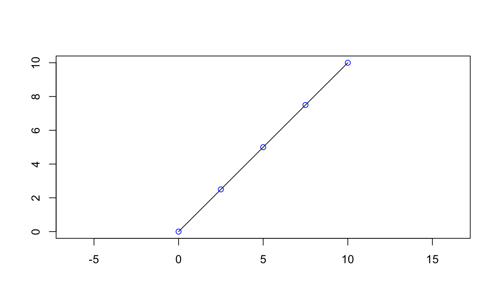

Vectorized along x and distance.
geos_project(x, point) geos_project_normalized(x, point) geos_interpolate(x, distance, to = geo_ptype(x)) geos_interpolate_normalized(x, distance, to = geo_ptype(x))
Arguments
| x | A geometry-like (linestring) along which to interpolate (or on which to project). |
|---|---|
| point | A (point) geometry-like object |
| distance | The distance along the geometry. |
| to | A prototype created by |
Value
geos_project() and geos_project_normalized() both return
a numeric vector of distances; geos_interpolate() and
geos_interpolate_normalized() both return a geometry-like point
vector.
Examples
line <- geo_wkt("LINESTRING (0 0, 10 10)") # geos_interpolate() works in absolute distances geo_plot(line)# geos_interpolate() works in relative distances (from 0..1) # this is useful for generating a number of equally-spaced points # along a line geo_plot(line)# geos_project() and geos_project_normalized() are the opposite # of these operations geos_project(line, geo_wkt("POINT (5 5)"))#> [1] 7.071068#> [1] 0.5